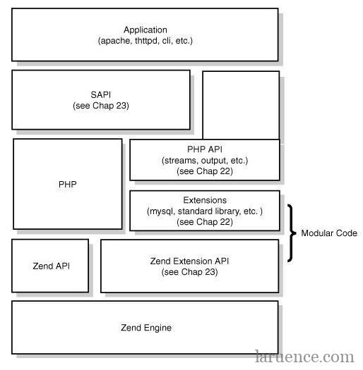
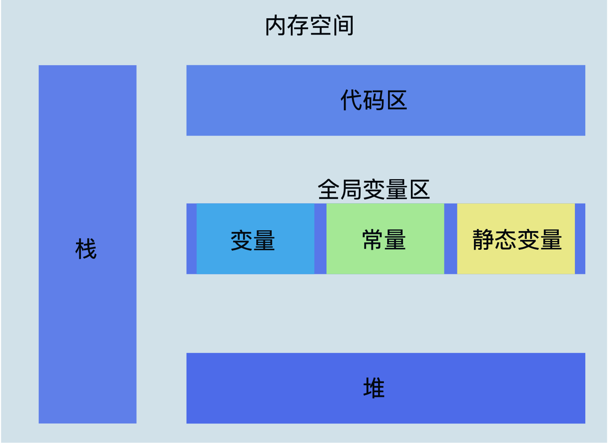
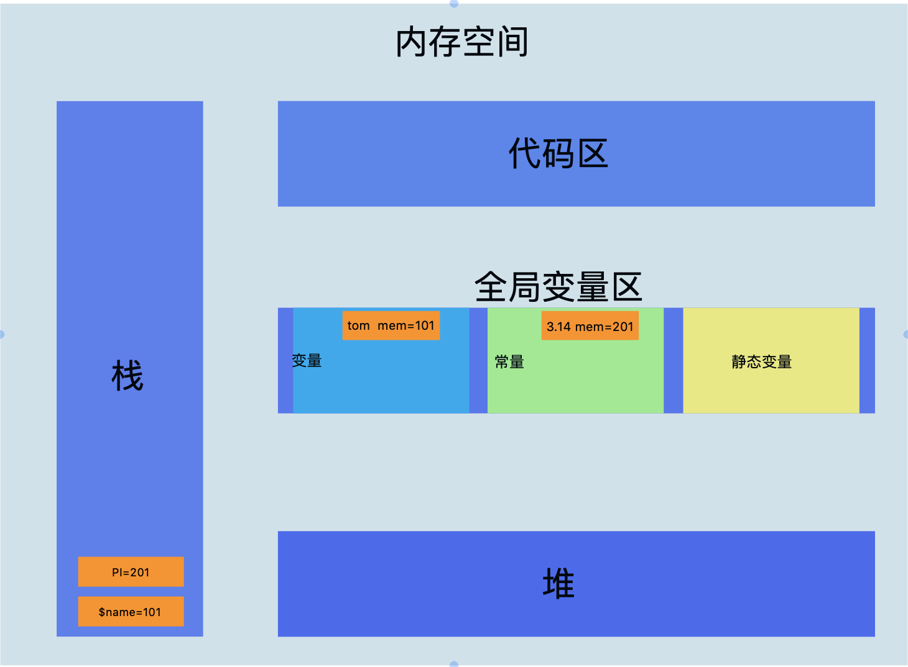
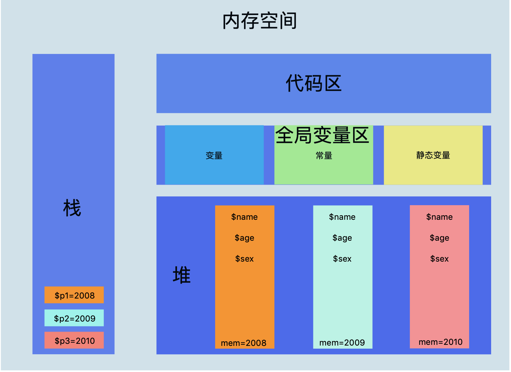

我不去想是否能够成功，既然选择了远方，便只顾风雨兼程。
SPL
一、定义
- SPL，
Standard PHP Library的缩写，译为标准PHP类库，是用于解决典型问题(standard problems)的一组接口与类的集合。
二、分类
三、参考
- 参考官方文档
yield
一、基础
二、实战
三、参考
预定义接口
后期静态绑定
一、基础
先看官网介绍：PHP增加了一个叫做后期静态绑定的功能，用于在继承范围内引用静态调用的类。准确说，后期静态绑定工作原理是存储了在上一个“非转发调用”(non-forwarding call)的类名。当进行静态方法调用时，该类名即为明确指定的那个(通常在::运算符左侧部分)；当进行非静态方法调用时，即为该对象所属的类。所谓的“转发调用”(forwarding call)指的是通过以下几种方式进行的静态调用：self::，parent::，static:: 以及 forward_static_call()。可用 get_called_class()函数来得到被调用的方法所在的类名，static::则指出了其范围。
对于不了解这块的同学来说，看完是不是一脸懵，完全不知道讲了什么东西，大概总结一下(个人理解)：①对于使用static::调用的方法或属性，不一定会调用定义此方法或属性的类，而是会根据外部调用类进行转发调用。②使用self::或者CLASS对当前类的静态引用，取决于定义当前方法所在的类③和self::类似，parent::也取决于定义当前方法所在的类。对于②③来说，完全按self/parent字面意思理解即可。
二、例子
1 | class AAA { |
三、参考
底层原理
一、核心结构

- Zend：用纯C实现，是PHP的内核部分，它将PHP代码翻译(词法、语法解析等一系列编译过程)为可执行opcode处理。它实现了基本的数据结构、内存分配及管理，提供了相应的api方法供外部调用，是一切的核心，所有的外围功能均围绕Zend实现。
- Zend引擎：跨平台的重要基础
- Zend引擎执行PHP代码过程：
- 词法分析Scanning(Lexing)，将PHP代码转换为语言片段Tokens
- 语义解析Parsing，将Tokens转换成简单而有意义的表达式
- 编译Compilation，将表达式编译成Opcode
- 执行Execution，顺序执行Opcode，每次一条，以实现PHP代码所表达的功能
- Opcode是PHP程序执行的最基本单位
- 一个Opcode由两个参数(op1,op2)、返回值和处理函数组成，PHP程序最终被翻译为一组opcode处理函数的顺序执行。
- APC、Opchche等扩展可以将Opcode缓存以加速PHP应用的运行速度，即省去了前三部词法分析、语义解析、编译
- Zend引擎执行PHP代码过程：
- Zend API
- Zend Extension API
- Zend引擎：跨平台的重要基础
- Extensions：通过组件式的方式提供各种基础服务，常见的各种内置函数(如array/string)、标准库等都是通过Extensions来实现，用户也可以根据需要实现自己的extension以达到功能扩展、性能优化等目的。
- SAPI：全称是Server Application Programming Interface，即服务端应用编程接口。它通过一系列钩子函数使得PHP可以和外围交互数据，将PHP本身和上层应用解耦隔离，PHP可以不再考虑如何针对不同应用进行兼容，而应用本身也可以针对自己的特点实现不同的处理方式，这是PHP非常优雅和成功的一个设计。
- Application：即编写的PHP程序，通过不同的SAPI方式得到各种各样的应用模式，如通过webserver实现web应用、在命令行下以脚本方式运行等等。
二、生命周期
- 基本过程
- 模块初始化(Module Initialization)，即调用php.ini中指明的扩展的初始化函数进行初始化工作，如mysql扩展。
- 请求初始化(Request Initialization)，即初始化为执行本次脚本所需要的变量名称和变量值内容的符号表，如$_SESSION变量。
- 执行PHP脚本。
- 请求处理完成(Request Shutdown)，按顺序调用各个模块的RSHUTDOWN方法，释放掉这次请求使用过的所有东西，如变量表的所有变量、申请的内存等。
- 关闭模块(Module Shutdown)，PHP调用每个扩展的MSHUTDOWN方法，这是各个模块最后一次释放内存的机会。
- 不同的运行模式下以上过程发生的次数可能不同，传送门
- 直接以CLI/CGI模式调用
- 多进程模式
- 多线程模式
- Embedded(嵌入式，在自己的C程序中调用Zend Engine)
三、一些概念
CGI，全称是通用网关接口(Common Gateway Interface)，是一种协议，描述了客户端和这个程序之间传输数据的一种标准，可以让一个客户端从网页浏览器向执行在Web服务器上的程序请求数据。它是独立于任何语言的，任何一种编程语言都可以实现它，只要这种语言具有标准输入、输出和环境变量，如php，perl，tcl等。它的作用就是帮助服务器与web编程语言通信，是为了保证web server传递过来的数据是标准格式的，方便CGI程序(如php-cgi)的编写者。
- 如果一个静态请求如xxx/index.html或/image.png等，那么web server会去文件系统中找到这个文件并发送给浏览器
- 如果一个动态请求如xxx/index.php或/index.jsp等，nginx会根据配置文件将这个请求简单处理后交给相应的解析器(如PHP)
- 假如请求的是index.php，nginx会传哪些数据给PHP解析器呢？url要有吧，查询字符串也得有吧，POST数据也要有，HTTP Header不能少吧等等。CGI就是规定要传哪些数据、以什么样的格式传递给后方处理这个请求的协议。
- 当web server收到/index.php这个请求后，会启动对应的CGI程序，这里就是PHP的解析器。接下来PHP解析器会解析php.ini文件，初始化执行环境，然后处理请求，再以CGI规定的格式返回处理后的结果，退出进程。web server再把结果返回给浏览器。
FastCGI也是Web服务器和处理程序之间通信的一种协议，是CGI的一种改进方案。FastCGI像是一个常驻(long-lived)型的CGI，可以一直执行，在请求到达时不会花费时间去fork一个进程来处理(CGI慢的原因)。另外它还是分布式的，通过Socket与FastCGI进程管理器进行交互，FastCGI程序可以在Web服务器以外的主机上执行，并且可以接受来自其它Web服务器的请求。
php-cgi：php的解释器，php-cgi是php提供给web serve的cgi协议接口程序。
- 当每次接到http前端服务器的请求都会开启个php-cgi进程进行处理，开启的php-cgi的过程中会先要重载配置，数据结构以及初始化运行环境。如果更新了php配置，那么就需重启php-cgi才能生效。
- php-cgi只是个CGI程序，本身只能处理请求返回结果，不会管理进程，所以就出现了一些能够调度php-cgi进程的程序，比如由lighthttpd分离出来的spawn-fcgi，再比如php-fpm。
PHP-FPM全称
PHP FastCGI Process Manager，即PHP FastCGI进程管理器，是FastCGI协议的一种实现并被PHP官方收录，用于管理PHP进程并接受来自Web服务器(如nginx)的请求。它包含master和worker两种进程，master进程只有一个，负责监听端口，接收来自服务器的请求；而worker进程则一般有多个(具体数量根据实际需要配置)，每个进程内部都嵌入了一个PHP解释器，是PHP代码真正执行的地方。由于php-fpm是多进程的，而一个php-cgi基本消耗7-25M内存，因此如果连接过多就会导内存消耗过大，引发一些问题，例如nginx里的502错误。
为什么会出现php-fpm?
- php-fpm的出现是为了很好的管理php-fastcgi而实现的一个程序
什么是php-fastcgi?
- php-fastcgi只是一个cgi程序，只会解析php请求并且返回结果，不会管理，因此才出现的php-fpm。
为什么不叫php-cgi?
- 其实在php-fastcgi出现之前是有一个php-cgi存在的，只是它的执行效率低下，因此被php-fastcgi取代。
php-fastcgi和php-cgi有什么区别?
- 当一个服务web-server(nginx)分发过来请求的时候，通过匹配后缀知道该请求是个动态的php请求，会把这个请求转给php。
- php-cgi：一个请求过来后，每次都要不停的去创建一个进程，读取php.ini配置，初始化环境，返回数据，退出进程等周而复始，而进程的启动与销毁是非常占用资源的。
- php-fastcgi：首先fast-cgi会先启一个master进程，读取php.ini配置文件，初始化执行环境，然后再启动多个worker进程。当请求过来时，master会传递给一个worker，然后立即可以接受下一个请求。当worker不够用时，master可以根据配置预先启动几个worker等着。当空闲worker太多时，也会停掉一些。
- 当一个服务web-server(nginx)分发过来请求的时候，通过匹配后缀知道该请求是个动态的php请求，会把这个请求转给php。
nginx是怎么和php-fpm通信的？
- nginx提供了fastcgi模块将http请求映射为对应的fastcgi请求。
- nginx的fastcgi模块提供了fastcgi_param指令来主要处理这些映射关系，其主要完成的工作是将nginx中的变量翻译成PHP中能够理解的变量。
- fastcgi_pass指令用于指定php-fpm进程监听的地址，nginx会把所有的php请求翻译成fastcgi请求之后再发送到这个地址。
php是怎么平滑启动的？
- php-cgi进程是没办法平滑重启的，php-fpm对此的处理机制是新的worker进程用新的配置，已经存在的worker进程处理完请求后退出。
php-fpm.conf
1
2
3
4
5
6
7
8
9
10
11
12
13
14
15
16
17
18
19
20
21
22
23
24
25
26
27
28
29
30
31
32
33
34
35
36
37
38
39
40
41
42
43
44
45
46
47
48
49
50
51
52
53
54
55
56
57
58
59
60
61
62
63
64
65
66
67
68
69
70
71
72
73
74
75
76
77
78
79pid = run/php-fpm.pid
#pid设置，默认在安装目录中的var/run/php-fpm.pid，建议开启
error_log = log/php-fpm.log
#错误日志，默认在安装目录中的var/log/php-fpm.log
log_level = notice
#错误级别. 可用级别为: alert（必须立即处理）, error（错误情况）, warning（警告情况）, notice（一般重要信息）, debug（调试信息）. 默认: notice.
emergency_restart_threshold = 60
emergency_restart_interval = 60s
#表示在emergency_restart_interval所设值内出现SIGSEGV或者SIGBUS错误的php-cgi进程数如果超过 emergency_restart_threshold个，php-fpm就会优雅重启。这两个选项一般保持默认值。
process_control_timeout = 0
#设置子进程接受主进程复用信号的超时时间. 可用单位: s(秒), m(分), h(小时), 或者 d(天) 默认单位: s(秒). 默认值: 0.
daemonize = yes
#后台执行fpm,默认值为yes，如果为了调试可以改为no。在FPM中，可以使用不同的设置来运行多个进程池。 这些设置可以针对每个进程池单独设置。
listen = 127.0.0.1:9000
#fpm监听端口，即nginx中php处理的地址，一般默认值即可。可用格式为: ‘ip:port’, ‘port’, ‘/path/to/unix/socket’. 每个进程池都需要设置.
listen.backlog = -1
#backlog数，-1表示无限制，由操作系统决定，此行注释掉就行。backlog含义参考：
listen.allowed_clients = 127.0.0.1
#允许访问FastCGI进程的IP，设置any为不限制IP，如果要设置其他主机的nginx也能访问这台FPM进程，listen处要设置成本地可被访问的IP。默认值是any。每个地址是用逗号分隔. 如果没有设置或者为空，则允许任何服务器请求连接
listen.owner = www
listen.group = www
listen.mode = 0666
#unix socket设置选项，如果使用tcp方式访问，这里注释即可。
user = www
group = www
#启动进程的帐户和组
pm = dynamic #对于专用服务器，pm可以设置为static、dynamic(默认)、ondemand
#如何控制子进程，选项有static和dynamic。如果选择static，则由pm.max_children指定固定的子进程数。如果选择dynamic，则由下开参数决定：
pm.max_children #，子进程最大数
pm.start_servers #，启动时的进程数
pm.min_spare_servers #，保证空闲进程数最小值，如果空闲进程小于此值，则创建新的子进程
pm.max_spare_servers #，保证空闲进程数最大值，如果空闲进程大于此值，此进行清理
pm.max_requests = 1000
#设置每个子进程重生之前服务的请求数. 对于可能存在内存泄漏的第三方模块来说是非常有用的. 如果设置为 ’0′ 则一直接受请求. 等同于 PHP_FCGI_MAX_REQUESTS 环境变量. 默认值: 0.
pm.status_path = /status
#FPM状态页面的网址. 如果没有设置, 则无法访问状态页面. 默认值: none. munin监控会使用到
ping.path = /ping
#FPM监控页面的ping网址. 如果没有设置, 则无法访问ping页面. 该页面用于外部检测FPM是否存活并且可以响应请求. 请注意必须以斜线开头 (/)。
ping.response = pong
#用于定义ping请求的返回相应. 返回为 HTTP 200 的 text/plain 格式文本. 默认值: pong.
request_terminate_timeout = 0
#设置单个请求的超时中止时间. 该选项可能会对php.ini设置中的’max_execution_time’因为某些特殊原因没有中止运行的脚本有用. 设置为 ’0′ 表示 ‘Off’.当经常出现502错误时可以尝试更改此选项。
request_slowlog_timeout = 10s
#当一个请求该设置的超时时间后，就会将对应的PHP调用堆栈信息完整写入到慢日志中. 设置为 ’0′ 表示 ‘Off’
slowlog = log/$pool.log.slow
#慢请求的记录日志,配合request_slowlog_timeout使用
rlimit_files = 1024
#设置文件打开描述符的rlimit限制. 默认值: 系统定义值默认可打开句柄是1024，可使用 ulimit -n查看，ulimit -n 2048修改。
rlimit_core = 0
#设置核心rlimit最大限制值. 可用值: ‘unlimited’ 、0或者正整数. 默认值: 系统定义值.
chroot =
#启动时的Chroot目录. 所定义的目录需要是绝对路径. 如果没有设置, 则chroot不被使用.
chdir =
#设置启动目录，启动时会自动Chdir到该目录. 所定义的目录需要是绝对路径. 默认值: 当前目录，或者/目录（chroot时）
catch_workers_output = yes
#重定向运行过程中的stdout和stderr到主要的错误日志文件中. 如果没有设置, stdout 和 stderr 将会根据FastCGI的规则被重定向到 /dev/null . 默认值: 空.
后记
- cgi：一种协议，通过cgi协议web server可以将动态请求和相关参数发送给专门处理动态内容的应用程序。
- fastcgi：也是一种协议，是cgi的优化版。
- php-cgi：cgi协议的一种实现，它是单进程的，一个进程处理一个请求，处理结束后进程就销毁。
- php-fpm：是对php-cgi的改进版，也是fastcgi的一种实现，它直接管理多个php-cgi进程/线程。
- cgi进程/线程：在php上就是php-cgi进程/线程，专门用于接收web server的动态请求，调用并初始化zend虚拟机。
- cgi脚本：被执行的php源代码文件。
- zend虚拟机：对php文件做词法分析、语法分析、编译成opcode并执行，最后关闭zend虚拟机。
- cgi进程/线程和zend虚拟机的关系：cgi进程调用并初始化zend虚拟机的各种环境。
四、PHP-FPM详解
处理流程
- PHP-FPM的master进程接收到请求。
- master进程根据配置指派特定的worker进程进行请求处理，如果没有可用进程则返回502错误。
- worker进程处理请求，如果超时则返回504错误。
- 请求处理结束，返回结果。
- 具体流程如下：
- fpm的实现就是创建一个master进程，在master进程中创建worker pool并监听socket，然后fork出多个子进程(worker)。worker进程启动后阻塞在fcgi_accept_request()上接收请求，有请求到达后worker开始读取请求数据，读取完成后开始处理然后再返回，在这期间是不会接收其它请求的。这也就是说fpm的子进程同时只能响应一个请求，只有把这个请求处理完成后才会接收下一个请求。
- fpm的master进程与worker进程之间不会直接进行通信，master通过共享内存获取worker进程的信息，比如worker进程当前状态、已处理请求数等，当master进程要杀掉一个worker进程时则通过发送信号的方式通知worker进程
- worker的工作流程包含以下几个步骤
- 等待请求：fcgi_accept_request()阻塞等待请求
- 接收请求：fastcgi请求到达后被worker接收并解析，一直到完全接收，然后将method、query、uri等信息保存到worker进程的fpm_scoreboard_proc_s结构中
- 初始化请求：php_request_startup()执行，此步骤会调用每个扩展的PHP_RINIT_FUNCTION方法，初始化一些操作
- 处理请求(编译、执行)：php代码编译执行阶段，由 php_execute_script方法完成
- 关闭请求：返回响应，执行php_request_shutdown方法关闭请求，然后进入第一步继续等待请求，此步骤会执行每个扩展的PHP_RSHUTDOWN_FUNCTION进行一些收尾工作
运行方式
pm = static，静态，始终保持一个固定数量的子进程，这个数由pm.max_children定义，这种方式很不灵活，也通常不是默认的。pm = dynamic，动态，子进程的数量是动态变化的，启动时会生成固定数量的子进程，可以理解成最小子进程数，通过pm.start_servers控制，而最大子进程数则由pm.max_children控制，子进程数会在pm.start_servers~pm.max_children范围内波动。另外闲置的子进程数还可以由pm.min_spare_servers和pm.max_spare_servers两个配置参数控制，如果闲置的子进程超过pm.max_spare_servers则会被杀掉。pm = ondemand，按需要，这种模式和dynamic模式相反，把内存放在第一位。每个闲置进程在持续闲置了pm.process_idle_timeout秒后就会被杀掉。有了这个模式，到了服务器低峰期，内存自然会降下来，如果服务器长时间没有请求，就只有一个主进程，当然其弊端是，遇到高峰期或者pm.process_idle_timeout设置太小，无法避免服务器频繁创建进程的问题。
五、参考
垃圾回收机制
一、基础
垃圾回收机制是一种动态存储分配方案，它会自动释放程序不再需要的已分配的内存块，自动回收内存的过程叫垃圾收集，它是新一代语言所共有的特征。
- <=5.2：引用计数法
每个php变量存在一个叫”zval”的变量容器中。一个zval变量容器，除了包含变量的类型和值，还包括两个字节的额外信息。第一个是”is_ref”，是个bool值，用来标识这个变量是否是属于引用集合(reference set)。通过这个字节，php引擎才能把普通变量和引用变量区分开来，由于php允许用户通过使用&来使用自定义引用，zval变量容器中还有一个内部引用计数机制，来优化内存使用。第二个额外字节是”refcount”，用以表示指向这个zval变量容器的变量(也称符号即symbol)个数。所有的符号存在一个符号表中，其中每个符号都有作用域(scope)，那些主脚本(比如：通过浏览器请求的的脚本)和每个函数或者方法也都有作用域。
将一个变量赋值给另一个变量时，不会立即为新变量分配内存空间，而是在原变量的zval中给refcount加1。 只有当原变量或者发生改变时，才会为新变量分配内存空间，同时原变量的refcount减1 。当然，如果unset原变量，新变量直接就使用原变量的zval而不是重新分配。&引用赋值时，原变量的is_ref 变为1，refcount 加1. 如果给一个变量&赋值，之前=赋值的变量会分配空间。
$a=1给变量a赋值的时候：is_ref为false，refcount为1; $b=$a将变量a的值赋给变量b，变量b不会立刻去在内存中存储值，而是先指向变量a的值，一直到变量a有任何操作的时候，此时is_ref=0,refcount=2; $c=&$a程序操作了变量a，变量b会自己申请一块内存将值放进去，所以变量a的zval容器中refcount会先减1变为1，然后变量c又指向a，所以refcount会再加1变为2，is_ref变为true。
- php5.3+：同步回收算法
在5.2版本或之前版本，引用计数回收算法:为每个内存对象分配一个计数器refcount，当一个内存对象建立时计数器初始化为1(因此此时总是有一个变量引用此对象)，以后每有一个新变量引用此内存对象，则计数器加1，而每当减少一个引用此内存对象的变量则计数器减1，当垃圾回收机制运作的时候，将所有计数器为0的内存对象销毁并回收其占用的内存。而PHP中内存对象就是zval，而计数器就是refcount__gc。
在5.3之后版本(不包含php7)，回收算法仍然以引用计数为基础，改进为同步回收算法。如果发现一个zval容器中的refcount在增加，说明不是垃圾；如果发现一个zval容器中的refcount在减少，如果减到了0，直接当做垃圾回收；如果发现一个zval容器中的refcount在减少，并没有减到0，PHP会把该值放到缓冲区，当做有可能是垃圾的怀疑对象。当缓冲区达到临界值，PHP会自动调用一个方法取遍历每一个值，如果发现是垃圾就清理。
- php7.0+：垃圾回收器+标记清除算法
php包含四种标量类型(布尔型，整型，浮点型，字符串)，三种复合类型(数组，对象，callable)，两种特殊类型(资源和null)。在php7中，字符串、数组、对象、资源的数据结构中头部都有一个gc，这个gc的作用就是用来对垃圾回收的支持。
当变量赋值、传递时会增加value的引用数，unset/return等释放变量时再减掉引用数，减掉后如果发现refcount变为0则直接释放value，这是变量的基本回收过程。
如果当变量的refcount减小后大于0，PHP并不会立即对这个变量进行垃圾鉴定和回收，而是放入一个缓冲区中(双向链表)，等这个缓冲区满了以后(10000个值)再统一进行处理，这个缓冲区就称为垃圾回收器。
加入缓冲区的是变量zend_value里的gc，目前垃圾只会出现在数组和对象两种类型中，数组的情况上面已经介绍了，对象的情况则是成员属性引用对象本身导致的，其它类型不会出现这种变量中的成员引用变量自身的情况，所以垃圾回收只会处理这两种类型的变量。
一个变量只能加入一次缓冲区，为了防止重复加入，变量加入后会把zend_refcounted_h.gc_info置为 GC_PURPLE，即标为紫色，后续不会重复插入。
垃圾缓冲区是一个双向链表，等到缓存区满了以后则启动垃圾检查过程：遍历缓冲区，对当前变量的所有成员进行遍历，然后把成员的refcount减1(如果成员还包含子成员则也进行递归遍历，即深度优先遍历)，最后再检查当前变量的引用，如果减为了0则为垃圾。
这个算法的原理核心是：垃圾是由于成员引用自身导致的，那么就对所有的成员减一遍引用，如果发现最后变量本身的refcount变为了0则就表明其引用全部来自自身成员，即其他任何地方都不再使用它，那么它就是垃圾，需要被回收掉，反之说明不是垃圾，需要将其从缓冲区移出去。具体的过程如下：
①从缓冲区链表的roots开始遍历，把当前value标为灰色(zend_refcounted_h.gc_info置为GC_GREY)，然后对当前value的成员进行深度优先遍历，把成员value的refcount减1，并且也标为灰色；
②重复遍历缓冲区链表，检查当前value引用是否为0，为0则表示确实是垃圾，把它标为白色(GC_WHITE)，如果不为0则排除了引用全部来自自身成员的可能，表示还有外部的引用，并不是垃圾。这时候因为步骤(1)对成员进行了refcount减1操作，需要再还原回去，对所有成员进行深度遍历，把成员refcount加1，同时标为黑色；
③再次遍历缓冲区链表，将非GC_WHITE的节点从roots链表中移出，最终roots链表中全部为真正的垃圾，最后将这些垃圾清除。
1 | #############5.6############# |
二、参考
变量和内存的关系
一、内存结构
- 内存从逻辑上说大体上是分为4个区，分别为
- 栈空间：速度快，占的空间小
- 堆空间：速度慢，占的空间大
- 代码区
- 静态区，也称全局变量区，由3部分组成：
- 变量：可重复写
- 常量：只能写一次
- 静态变量：整个程序运行期间都存在

在C语言中，供用户使用的存储空间分为三类：程序区、静态存储区、动态存储区。其中，程序区存放的是可执行程序的机器指令；静态存放区存储的是在程序运行过程中需要占用固定存储单元的变量，如全局变量；动态存储区存放的是在程序运行过程中根据需要动态分配内存空间的变量，如形式参数、局部变量。
二、测试代码
1 | <?php |
定义变量/常量过程
- 将
Tom放到全局变量区的变量区，同时申请一块内存拿到内存地址，如101 - 在栈空间申请一块内存以保存变量名
$name - 将
Tom的地址101保存到$name对应的值 echo $name则是根据$name去栈空间拿到地址值101，根据地址取数据Tom

- 将
对象，作为php数据类型之一，在运行的时候都要加载到内存中去用。对象是放在堆里面的，但对象名称是放在栈里面的，这样通过对象名称就可以使用对象了。
1 | class Person |

$p = new Person();
$p是对象名称在栈内存里面，存储对象的首地址，相当于一个指针指向堆里面的对象new Person()是真正的对象是在堆内存里面
三、参考
数组实现原理
一、基础
- 先来看php两个版本的源码
- php5.6
1 | typedef union _zvalue_value { |
- php7.x
1 | typedef union _zend_value { |
哈希表
- 定义：哈希表，也叫散列表，是根据关键码值(Key value)而直接进行访问的数据结构。
- 它通过把关键码值映射到表中一个位置来访问记录，以加快查找的速度，这个映射函数叫做散列函数，存放记录的数组叫做散列表。
- 哈希函数：哈希表是把不同的关键字映射到不同单元的一种数据结构，实现这一过程的方法叫做哈希函数。
- 哈希冲突：如果关键字值数量很多，很容易出现多个关键字映射到同一单元的情况，这就是哈希冲突。
- 解决冲突
- 链接法：当不同的关键字映射到同一单元时，在同一单元内使用链表来保存这些关键字。
- 开放寻址法：当插入数据时，如果发现关键字被映射到的单元存在数据了，说明发生了冲突，就继续寻找下一个单元，直到找到可用单元为止。
- 定义：哈希表，也叫散列表，是根据关键码值(Key value)而直接进行访问的数据结构。
链表
- 定义：链表是一种物理存储单元上非连续、非顺序的存储结构，数据元素的逻辑顺序是通过链表中的指针链接次序实现的。
二、实现
- php解决哈希冲突的方式是使用了链接法，所以php数组是由哈希表+链表实现，准确来说是由哈希表+双向链表实现
- 未完待续
三、参考
调优
一、循环查询数据库
- 减少查询次数：如果可能的话，可以使用JOIN操作将多个表连接在一起，这样可以在一次查询中获取所有需要的数据。
- 使用索引：在查询语句中使用索引可以大大提高查询速度，可以使用EXPLAIN命令来查看查询语句是否使用了索引。
- 使用缓存：可以使用缓存来避免重复查询数据库，可以使用Memcached或Redis等缓存工具来存储查询结果，这样可以减少数据库的访问次数。
- 批量查询：如果需要查询多个ID对应的数据，可以使用IN语句一次查询多条记录，这样可以减少查询次数。
- 分页查询：如果需要查询大量数据并进行分页展示，可以使用LIMIT语句来限制查询结果的数量，这样可以减少查询数据量，提高查询速度。
- 数据库连接池：在循环查询数据库时，频繁地创建和关闭数据库连接会导致性能问题，可以使用连接池来复用数据库连接，减少连接的创建和关闭次数。
二、接口优化
- 接口性能优化：通过优化接口的代码逻辑、数据库查询、缓存、网络传输等方面，提升接口的响应速度和并发处理能力，从而提高系统的整体性能。
- 接口安全优化：通过对接口进行身份验证、访问控制、数据加密等安全措施，保障接口的安全性，防止恶意攻击和数据泄露。
- 接口可靠性优化：通过对接口进行异常处理、日志记录、监控等措施，提高接口的可靠性和稳定性，保障系统的正常运行。
- 接口易用性优化：通过对接口的参数设计、返回结果的格式、文档说明等方面进行优化，提高接口的易用性和可读性，降低开发成本和使用难度。
- 接口标准化优化：通过制定接口规范、统一接口命名、参数格式等方面进行优化，提高接口的可维护性和可扩展性，降低开发人员之间的沟通成本。